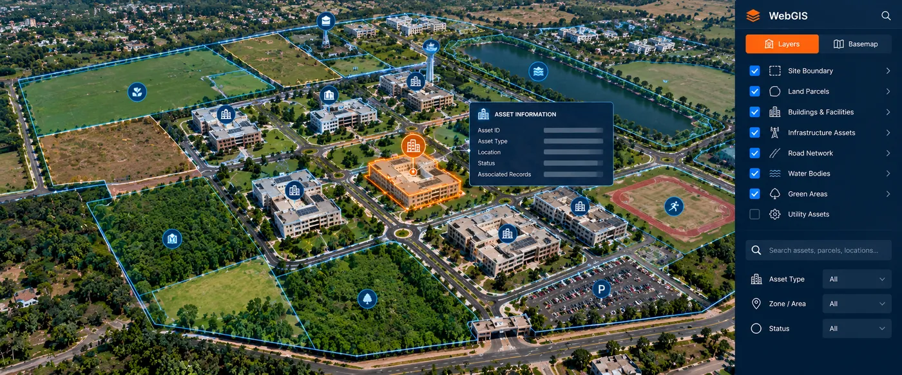

The Assignment
Government organisations and public-sector agencies often manage large portfolios of land, buildings, infrastructure and other geographically distributed assets. When information about these assets is maintained across separate maps, records and departmental systems, obtaining a consolidated view for planning and management becomes difficult.
CS TECH Ai's geospatial capabilities support the creation of WebGIS and enterprise spatial environments that bring mapped assets, land information and associated non-spatial data together within a common platform.
The objective is to make location-based information centrally accessible and usable across planning, administration and operational workflows.
Our Approach
CS TECH Ai combines GIS mapping, land-information management and enterprise application development to create an integrated spatial-information environment.
The solution framework includes:
- Mapping of land and infrastructure assets
- Creation and management of GIS layers
- Integration of spatial and non-spatial information
- Organization of land and asset information within a centralized geospatial database
- WebGIS-based visualization and access
- Search and retrieval of mapped information
- Integration of asset attributes with their geographic locations
- Role-based access to spatial information
- Spatial analysis and visualization
- Enterprise integration for operational use
CS TECH Ai's documented capabilities include next-generation WebGIS enterprise solutions and platforms capable of integrating and interpreting spatial, non-spatial and engineering information.
From Mapped Assets to Enterprise WebGIS
The overall information flow can be represented as:
Land & Asset Information → GIS Mapping → Spatial + Attribute Data Integration → Centralized Geospatial Database → WebGIS → Analysis & Enterprise Access
The important step is moving beyond standalone maps.
Individual parcels, facilities and infrastructure assets become spatial objects connected with their corresponding information, creating a common environment through which users can locate, view and work with geographically distributed assets.
Land & Asset Information
CS TECH Ai has established credentials in cadastral mapping and land-parcel generation, including deployment of land information for enterprise use across government and international environments. Its geospatial data has supported state governments and organisations across India, the USA, UK, Europe and the Middle East.
Within an enterprise GIS environment, this type of spatial information can be organized alongside mapped infrastructure and asset information to provide a more connected view of the land and facilities being managed.
Centralized Spatial Access
A WebGIS environment makes spatial information accessible through a browser-based enterprise application rather than restricting it to specialist desktop GIS users.
The platform can provide a common spatial environment for:
- Land and parcel information
- Buildings and facilities
- Infrastructure assets
- Asset attributes
- Spatial and operational information
- Maps and GIS layers
- Search and visualization
- Analytical and decision-support workflows
CS TECH Ai's enterprise GIS approach is designed around seamless access to location-based information and the integration of asset records and other datasets to create a single source of truth for operational awareness.
Supporting Government Land & Facility Management
By connecting assets and associated information to location, the WebGIS environment can support functions such as:
- Identifying and locating government assets
- Viewing land and facility information spatially
- Understanding the geographic distribution of assets
- Accessing information associated with individual mapped features
- Bringing information from multiple datasets into a common map-based environment
- Supporting planning and administrative workflows
- Providing spatial information for management and decision-making
The platform therefore moves the organization from dispersed land and asset records toward a more integrated enterprise spatial-information environment.